一旦你按照Sheikah Slate完成了任务，你将会看到海拉尔城堡的一个场景，并得知你的真正目标 - 一定要阻止加农。

从复活塔爬下来，你会发现老人用一个小小的装置漂浮着。 在跟他说话之后，他会注意到，高原唯一的方法就是用他拥有的滑翔伞。 但是，他不会只是把它交出来。 他想要回报的东西 - 在四个在大平原地区开辟的神社里。 只有通过寻求和征服这些神社，你才能得到4个灵魂球与他交换滑翔伞。
在这一点上，你去哪里，如何尝试这些神社大部分取决于你。 这里有很多探索，敌人打架，宝箱打开等等。 这个演练将给你最直接的路线到每个神社和如何完成它们。
OMAN AU神社
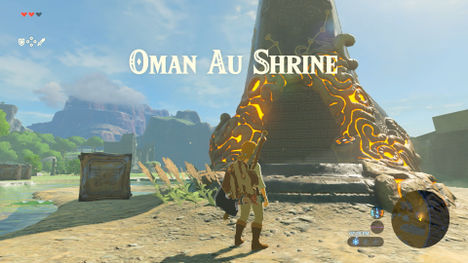你可以征服的第一个神社，会由老人指出给你。 它位于复活塔北部，就在一座破碎的桥梁和小池塘对面。
进入神社之前，你会看到一个大锁着的门，还有几个金属瓦片在地板上。 门左边是一个基座，您可以将Sheikah Slate放置，以获得磁力符文。 有了这个符文，你将能够操纵在神社和世界上发现的金属物体。
使用符文，将房间中间的金属板对准，将其从地板上抬起，露出门下方的路径。 沿着沿着路径爬上楼梯到另一个房间。 在这里，你会发现一块巨大的石墙堵住你的道路上。但是使用磁力符文你会防线有一块是金属的。用磁力把这些阻挡你的物体全部撞到一边。
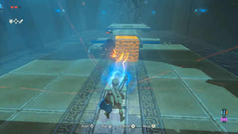在这条路的另一边，潜伏着一个迷你守护者。 虽然不如大守护者那样强大，但这个迷你守护者仍然可以通过定时激光爆炸造成重大伤害。 使用金属块作为遮挡 - 在这一点上，您也可以使用武器或使用磁力符文将其撞击到迷你守护者身上，甚至将其推入下面的水中，使其爆炸。
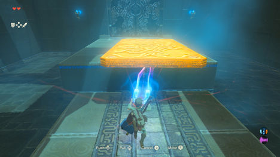随着防御的消失，穿过金属板到下一个平台 - 尽管平台之间没有桥梁。 您可以再次使用“磁力符文”从您身后拖动铁板，形成一条新的前进道路。 如果你在下面的水中掉下来 - 请注意，墙壁太平滑难以攀爬，所以你必须使用板子来建立一座桥梁。
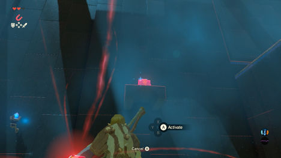注意：如果你向左看，你可以看到在高高的平台上有一个宝箱。 好像没有方法来到达那里 - 不一定要去那里，可以把宝箱弄过来吧？ 由于它是由金属制成，所以您可以将其用磁力符文浮起，并将其带下来给您，您可以在其中得到旅行者弓。
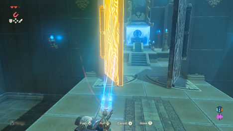在你面前潜伏着最后的防守 - 一个大金属门。 注意地板上的痕迹，拉 - 不要推门，并与阿曼僧侣交谈，完成神社并获得精神球。
JA BAIJ神社
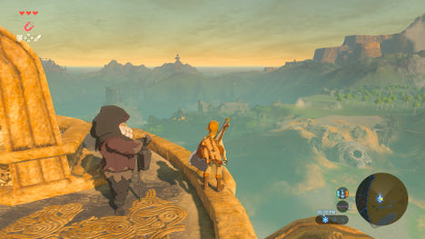
神社Ja Baij位于大平原的东部地区，就在东部修道院遗址的复活塔南部。 你可以从前面的神社出发，沿着塔进入废墟的一边，或者回到时间的寺庙，找到下面的修道院。
它被一个半功能的守护者守卫，这个守护者不能移动，但会其激光会造成极大的伤害。 由于神社位于其后面的封闭区域，您可以潜行经过守护者，爬上墙壁，也可以欺骗守护者轰炸墙壁部分。
进入神社时，您会在斜坡的尽头找到一个大密封墙。 墙上的裂缝意味着它可以被毁坏 - 但是你需要做的事情。 寻找左侧的基座，并将Shiekah Slate放置，以获得使用远程炸弹的能力。
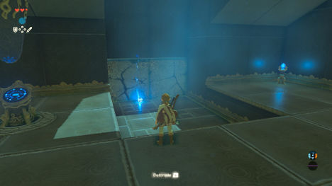这些炸弹 - 以球体和立方体形式出现 - 可以在任何时间放置和引爆，尽管爆炸和能够放置新炸弹之间的延迟很小。 球形炸弹非常适合投掷或倒下斜坡，而立方体炸弹更适合您需要炸弹留存的精确位置。 将一个放在坡道的尽头，以打破通向走廊的墙壁。
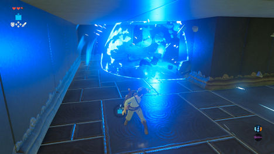注意：从走廊出发，先找到另一个小密封破墙。 在这里引爆一枚炸弹，找到一个隐藏的壁龛，那里藏着一个旅行者的剑。
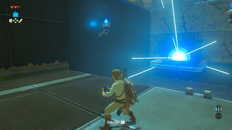在左边找到两个大的破裂的石头，并在旁边引爆炸弹，露出一个梯子。 在隔壁的房间里，你会发现一个移动的平台，穿过一个小小的缝隙到一个破裂的石头的墙壁。 由于你不能在墙壁上放置一枚炸弹，你需要在移动平台的末端放置一个立方体炸弹，并在另一边等待，直到炸弹到位才能将其炸毁。
下一个区域很大，可能看起来有点混乱。 漏斗最终连接在倾斜的平台上，能将物体有力的推出。 首先到达第一个漏斗旁边的平台上，并将一个Sphere Bomb放在漏斗中，这样就可以将它放在一个斜坡上，从而将其弹出到另一边 - 在一个破裂的石头上，爆炸显露一个梯子出来ß。
注意：在另一面是两个伸缩的巨大块。 站在最远的一个，发射到坑的另一边，你可以找到一个宝箱拿着一个士兵的弓。
现在你可以跳进坑里，爬上远处的梯子，到达和尚Ja Baij，得到下一个灵魂球。
神社OWA DAIM
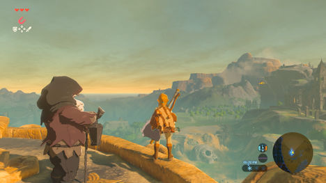
您可以去的下一个神社之一位于大平原的南部地区，在海拉尔山东南侧的一个陡峭的悬崖上。
你可以爬上时间寺庙后面的山丘，或从该地区南端的农场附近的悬崖上爬起来 - 你必须穿过一个小山沟，砍下一棵树，然后爬上在另一边的悬崖上，一路上使用小平台控制你的耐力。
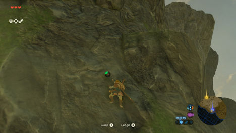请注意，如果您采取时间神庙之后的路线，您将会进入冰冷的地区，而林克将无法在这种环境中自行生存。 通过通往冻结的冻原的拱门寻找一小片辣椒，当您跋涉到神社时，您可以吃或做饭，以获得临时的抗寒能力。
进入神社，你会发现它在设计上几乎是发条的 - 许多移动部件和齿轮在大厅里移动平台。 特别是前方的移动平台将会快速移动，由于太快你不能通过，因此您可以用Sheikah Slate来检查左侧的基座，以获得停滞符文。
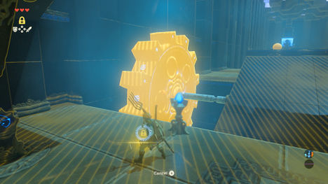使用这个符文，您可以冻结某些物体 - 要么停止运动物体的前进，要么在停滞符文被释放时在物体上形成动量。
使用停滞符文，瞄准左侧的大齿轮，当它旋转的平台是直的时候冻结它，奔跑穿过它。
当您进入下一部分时，请保持警惕，因为前面的大厅沿着坡道发射巨石，并将砸向您，并可能会将您碾压。 相反，等待一个时机通过并开始向上移动，并准备好你的停滞符文来冻结下一个向下的巨石 - 让你沿着巨石滑落路线跑到一边。
注意：当巨石从你身边经过后，用“停滞符文”再次冻结它，并继续向上爬坡，在那里石块下降到达一个更高的平台，宝箱正在等待。
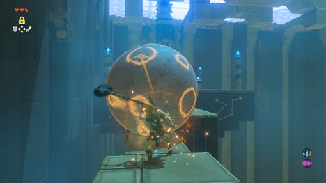从第一个平台，左边返现一个固定的巨石阻挡路径。 在附近，找一把铁大锤，装备它。 现在，用巨石上使用停滞符文，用你的大锤开始攻击它。 你会注意到，在停滞的巨石正在建立一个增加箭头的动力，你打的越多。 当停滞符文破裂时，巨石将向空中发射，出现路。
穿过桥，和僧侣Owa Daim说话，以获得你的下一个灵魂球。
神社KEH NAMUT
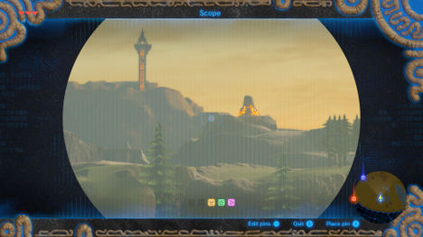
最后的神社位于大平原西部地区，位于海拉尔山顶部，海拉尔河流入瀑布的南部，离开高原。 有几种方法可以到达海拉尔河周围的神社，就像使用Deku Leaf煽动木筏，或者远赴时间神殿的南部，但是你要么需要辛辣的食物，比如辣椒或者是温暖的衣服才能幸存下来
一定要停在赫利亚山顶上，在那里你应该来到老人身旁，他会给你一条防寒服，所以你不必再把辣椒放在嘴里来保持体温。
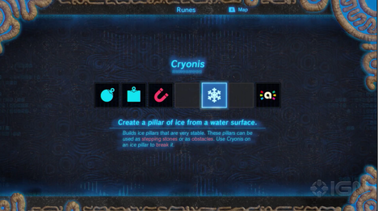进入神社，你会发现在一条路可以到达水池下面的一个高台阶上。 相反，在左边寻找一个基座，使用你的Sheikah Slate获得结冰符文。 这个符文可以在任何水池中的制成冰块平台。
现在用符文，使用结冰的力量在水池中创建一个平台，跳起来爬上边缘。
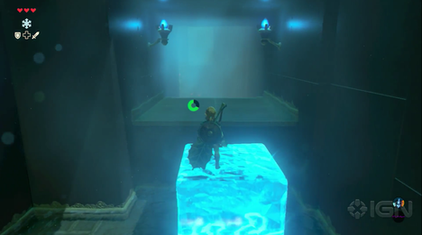通过在门下方建立一个冰柱，可以撑起阻挡玩家路径的闸门 - 向上推动挡块打开门。
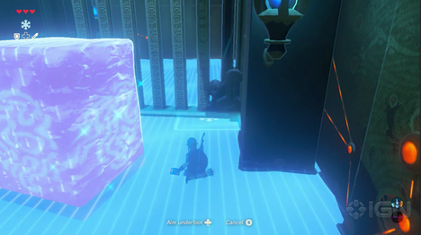在门的另一边，一个迷你守护者等待着你。 不像大变种那样强大，但是激光爆炸仍然可以刺伤你。 你可以参与，用箭头射击，还可以创造一块冰块作为封面。
试验的最后一部分可以通过在升高平台的两侧放置一个冰柱，使玩家达到升高的水平。
注意：攀登到上层平台后，看到楼梯右边的和尚。 有一个宝箱隐藏在一个壁龛里，你可以放置一个冰平台跳到宝箱那里。
穿过桥到达和尚。 在那里，玩家可以和Ke Numut说话，给你一个灵魂球。
返回老者那里
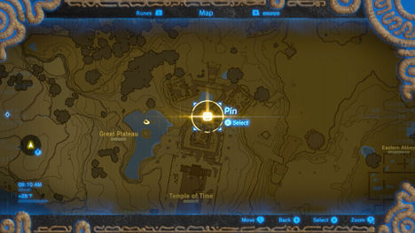
一旦你完成了所有的四个神社，老人将再次出现在你面前，但是在你可以要求你的奖励之前，他会叫你找到他在地图上交叉的地方。 看着你的地图，所有的四个神社似乎都聚集在时间神庙的地区 - 所以他在那里。

{kind=link}
{kind=link}
{kind=link}
{kind=link}
{kind=link}
{kind=link}
{kind=link}
{kind=link}
{kind=link}
{kind=link}
{kind=link}
{kind=link}
{kind=link}
{kind=link}
{kind=link}
{kind=link}
{kind=link}
{kind=link}
{kind=link}
{kind=link}
{kind=link}
{kind=link}
{kind=link}
{kind=link}
{kind=link}
{kind=link}
{kind=link}
{kind=link}
{kind=link}
{kind=link}
{kind=link}
{kind=link}
如果你还没有到过时间神庙，当你进入被毁坏的寺庙一定要检查一下右边，会找到一个宝箱时，。 在远端，一个大雕像现在正在发光。 在雕像前祷告，终于找到了圣灵的使用：你现在可以一次交易四个球，以获得一个心脏容器或体力轮。
{kind=link}
{kind=link}
在这样做之后，如果你还没有找到他，老人会从屋顶上召唤你。 走出被毁坏的寺庙的一侧，在建筑物的侧面找到一个长长的梯子，爬上屋顶。 在塔里，你会发现老人等着你 - 准备告诉你100年前发生的事情的真相。
事实揭示之后，您将获得滑翔伞，以及两个新的主要任务 - 一个非常令人恐惧的任务：击败Ganon，一个目标更容易达成：寻找Impa。
一定要探索大高原的其余部分，然后再出发您的下一个任务 - 有很多宝箱可以找到，解决呀哈哈(Korok Seed)难题，发现有趣的事情。